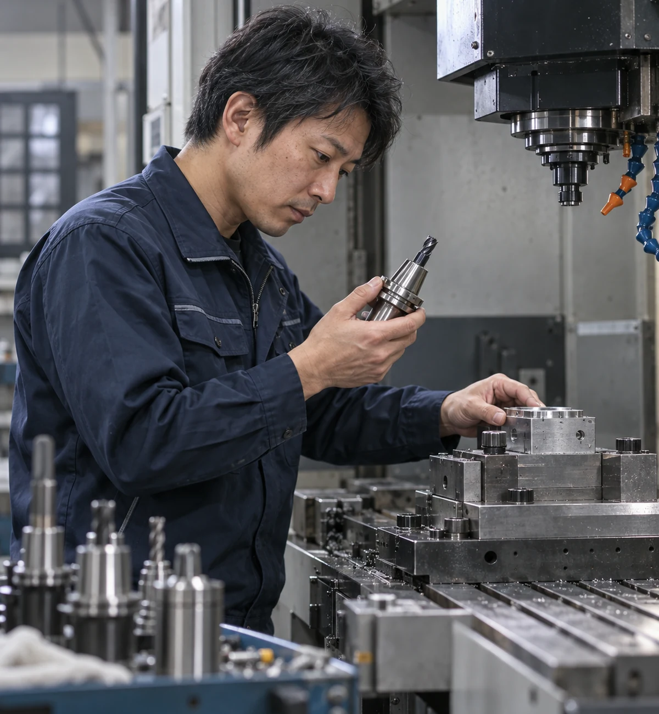
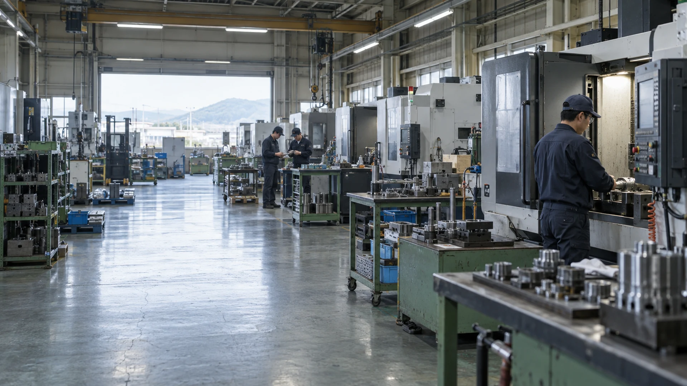
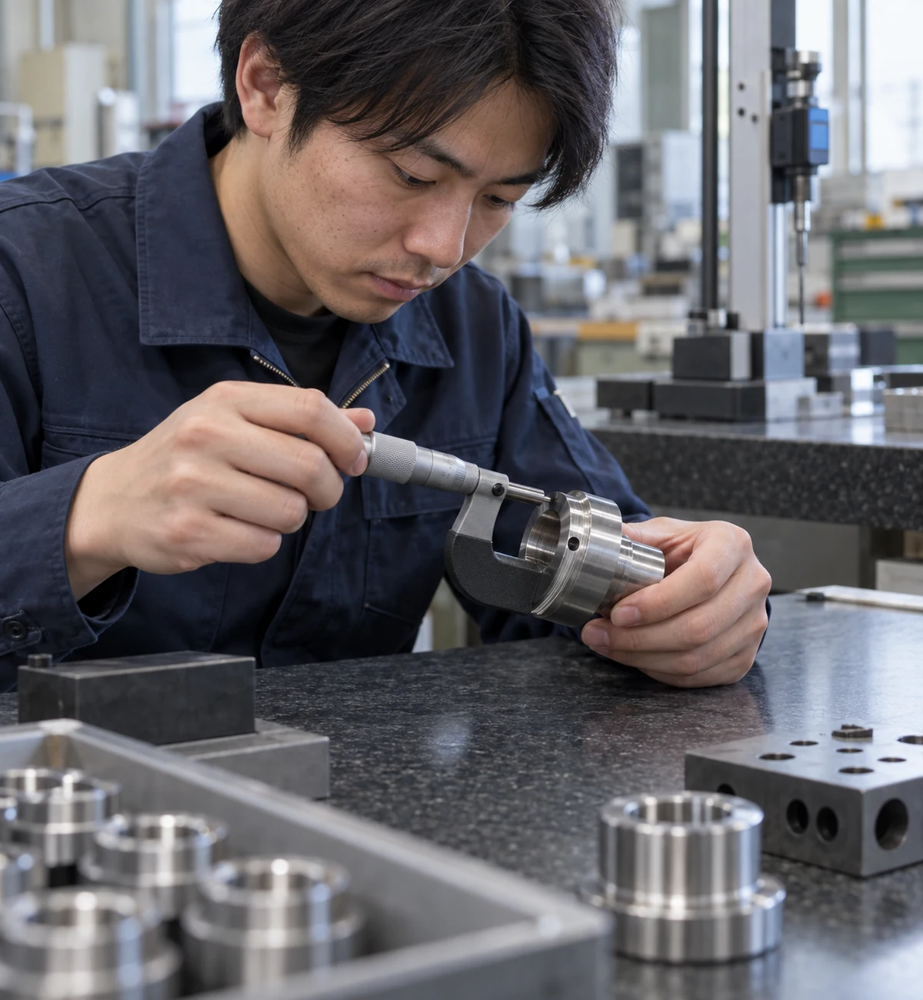
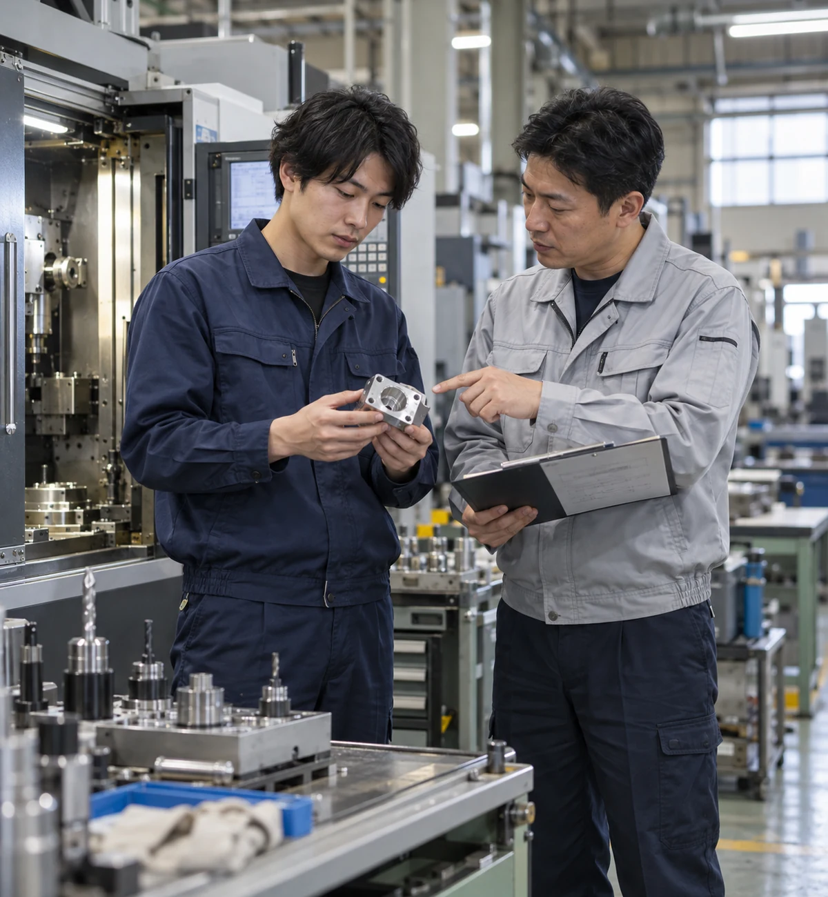

01
技術者
加工条件と段取りを考える

COMPANY / ABOUT SHINWA
加工の答えがまだ見えていない段階から、課題と条件を一緒に整理する会社です。
PHILOSOPHY
精密な部品をつくるには、設備や技術だけでなく、何を実現したいのかを正確に共有することが欠かせません。
芯和精工は、設計者と加工技術者が早い段階から言葉を交わし、材質、形状、工程、検査の条件を一つずつ整えることを大切にします。
株式会社 芯和精工
PEOPLE & WORKPLACE
設備だけでなく、検討・加工・測定に関わる人の視点を写真で伝えます。

加工条件と段取りを考える

加工結果を一つずつ確かめる

課題と判断を言葉で共有する
COMPANY PROFILE
番地・代表者名は正式情報確定後に追記
HISTORY
構成確認用の仮年表
愛知県豊田市で金属部品加工を開始
試作・小ロット案件への対応範囲を拡大（仮）
加工と測定を一つの流れで管理する体制へ（仮）
検討段階から技術者が関わる対応を推進（仮）
ACCESS
愛知県豊田市
豊田市役所周辺を、市の代表地点として表示しています。株式会社芯和精工の所在地を示すものではありません。
 お問い合わせContact図面がなくても、分かる範囲からご相談ください。
お問い合わせContact図面がなくても、分かる範囲からご相談ください。